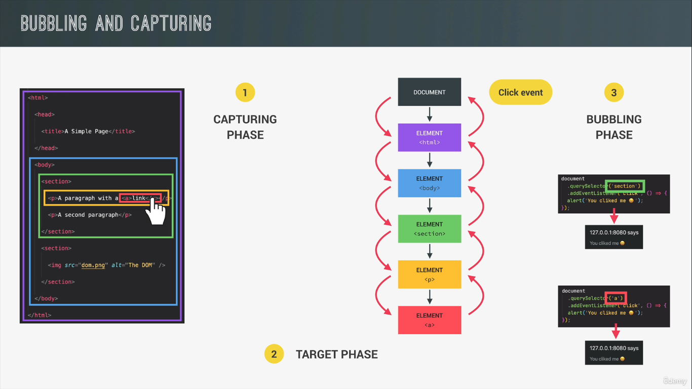
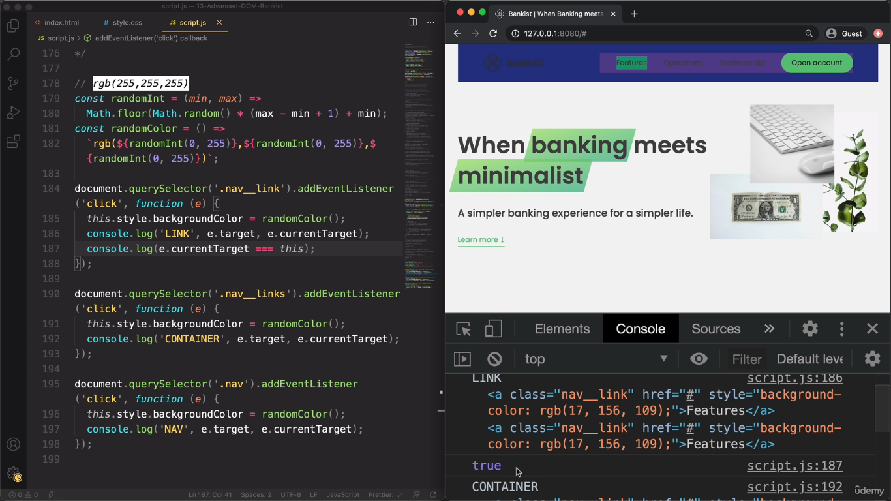
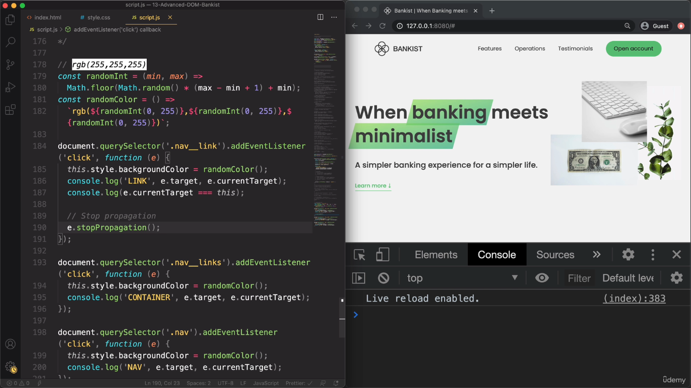

Javascript Notes - Document Object Model
Table of Contents
1. Advanced DOM
- Organization of the DOM API
- Every single node of the DOM tree is of the type node. Each node is represented as an object and each node gets access to special methods and properties such as textcontent, childNodes, parentNode etc.
- Node can be of different types
- Element
- HTML Element
- HTML Button element
- HTML Div element
- And there are a few others for images, links, etc.
- HTML Element
- Text
- Comment
- Document
- Element
- All the child nodes will get access to the methods and properties of the parent nodes due to inheritance.
- Event target is the parent of Node node type and the Window node type which gives access to the event listeners.
- The hierarchy follows the following
- Event Target
- Node
- Element
- HTML Element
- HTML Button element
- HTML Image element
- HTML Element
- Text
- Comment
- Doument
- Element
- Window
- Node
- Event Target
2. Selecting, Creating and Deleting elements
2.1. Selection
console.log(document.documentElement); //selects the whole document console.log(document.head); console.log(document.body); document.querySelector('.header'); document.querySelectorAll('.section'); document.getElementById('id_name'); document.getElementsByTagName('button'); //returns a html collection which is different from the node list and the main difference is that the collection gets updated immediately when the DOM updabtes. document.getElementByClassName('class');
2.2. Creation and Insertion
//insert adjacent html document.createElement('div'); // prepend, append, before, after // element.cloneNode(true)
2.3. Deletion
element.remove();
3. Styles, Attributes and Classes
const message = document.createElement('div'); // the styles are added to the element as inline stylesd message.style.backgroundColor = '#4e53345'; message.style.width = 120%; // retriving the values of the style property only works for inline styles console.log(message.style.height); // nothing is printed console.log(message.style.width); // 120 percent // they can be retrived using getComputedStyle console.log(getComputedStyle(message)); // returns an object containing the styles and the values console.log(getComputedStyle(message).color); // returns the colour // setting css custom properties :root{ --color-primary: red; } document.documentElement.style.setProperty('--color-primary', 'orange'); // attributes const logo = document.querySelector('.nav__logo'); console.log(logo.alt); console.log(logo.src); // return absolute url https://localhost:3000/img.jpg console.log(logo.className); // returns the class name // to return non standard attributes <img src='ok.jpg' alt='img' designer='jonas' class='nav__logo'/> console.log(logo.getAttribute('designer'); // returns jonas. There is something also called setAttribute to set the attribute. Also it returns relative url /img.jpg // data attributes <img src='ok.jpg' alt='img' designer='jonas' class='nav__logo' data-version-number=3.0/> // it should start with data and followed by whatever we want console.log(img.dataset.versionNumber); // returns 3.0 // classes logo.classlist.add(); logo.classlist.remove(); logo.classlist.contains(); logo.classlist.toggle(); logo.className = 'class'; // refrain using this
4. Implementing smooth scrolling
- Old School
const btnScrollTo = document.querySelector('.btn--scroll-to'); const section1 = document.querySelector('#section--1'); btnScrollTo.addEventListener('click', function (e) { const s1Coords = section1.getBoundingClientRect(); // console.log(e.target.getBoundingClientRect()); // console.log(window.pageXOffset, window.pageYOffset); // window.scrollTo(s1Coords.left, s1Coords.top + window.pageYOffset); window.scrollTo({ left: s1Coords.left + window.pageXOffset, top: s1Coords.top + window.pageYOffset, behavior: 'smooth', }); });
- Modern
btnScrollTo.addEventListener('click', function () { section1.scrollIntoView({ behavior: 'smooth' }); });
5. Types of Events and Event Listeners
// mouseenter event const h1 = document.querySelector('h1'); // one way h1.addEventListener('mouseenter', function(e){}) // the other way h1.onmouseenter = function(e){}; // adding and removing an event listend const alertFun = function(){ // do something h1.removeEventListener('mouseenter', alertFun); } h1.addEventListener('mouseenter', alertFun);
6. Event Propagation: Bubbling and Capturing
- Concept

- Demo event propogation

- Stop event propogation but in practise its not advisable

7. Event Delegation: Implementation
- Its not efficient since we are attaching the event listener to all elements
document.querySelectorAll('.nav__link').forEach(function (el) { el.addEventListener('click', function (e) { e.preventDefault(); const id = this.getAttribute('href'); document.getElementById(id.slice(1)).scrollIntoView({ behavior: 'smooth' }); }); });
- In event delegation, the event listener is added to a common parent element and determine which element originated the event
document.querySelector('.nav__links').addEventListener('click', function (e) { e.preventDefault(); if (e.target.classList.contains('nav__link')) { document .querySelector(e.target.attributes.href.value) .scrollIntoView({ behavior: 'smooth' }); } });